Each wide picture scrolls sideways on a phone. The short films play the finishing tick in real time. The reasons, the council's scores and the recommendation are in the brief; the idea list is in ideas.md.
Finishing a section or the list says nothing of its own
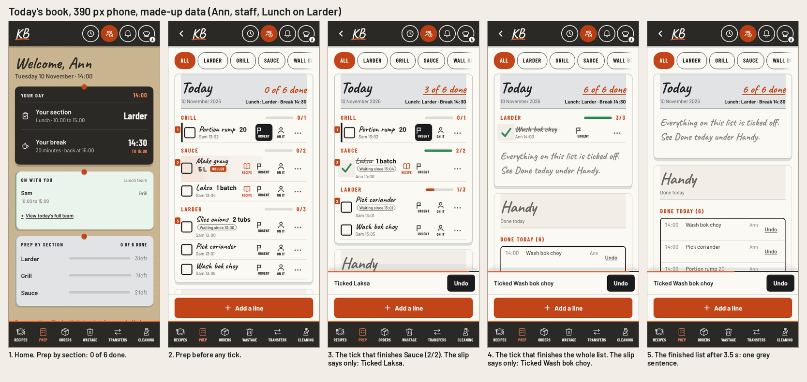
One compact card under a finished list
Step 1. When every line is ticked and the server has every tick, he stands beside the book's own sentence and says it once: Every line ticked. 6 of 6. He plays Serve once, then rests. Nothing shows while lines are left, and the page is no longer than today's.
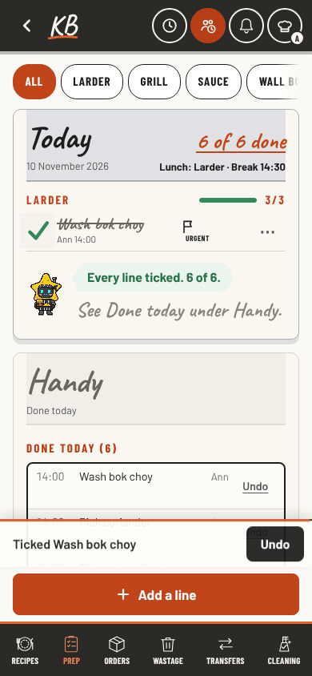
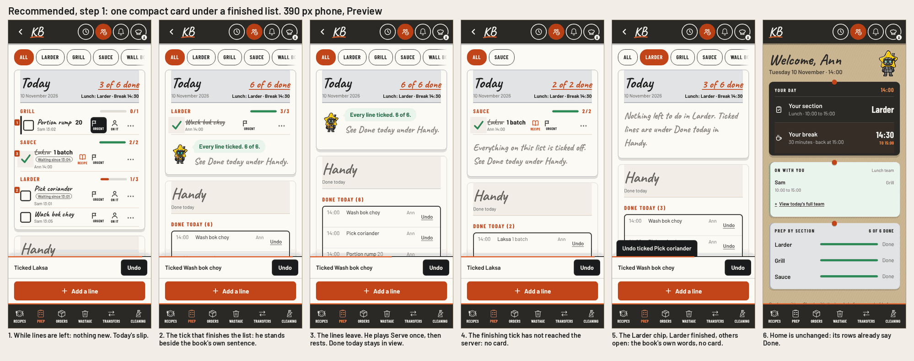
Step 2, later. One line of words on the slip when a section of two or more lines is finished: Sauce is done. Larder has 2 left. No art. One line or nothing: the slip is never taller than today's.
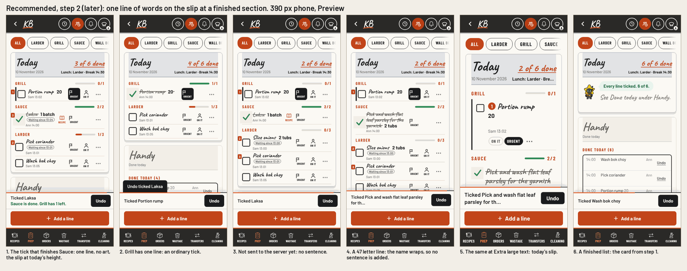
The slip speaks
No new surface. The slip that answers the tick carries his head and one more sentence, then goes after 9 seconds as it does today.
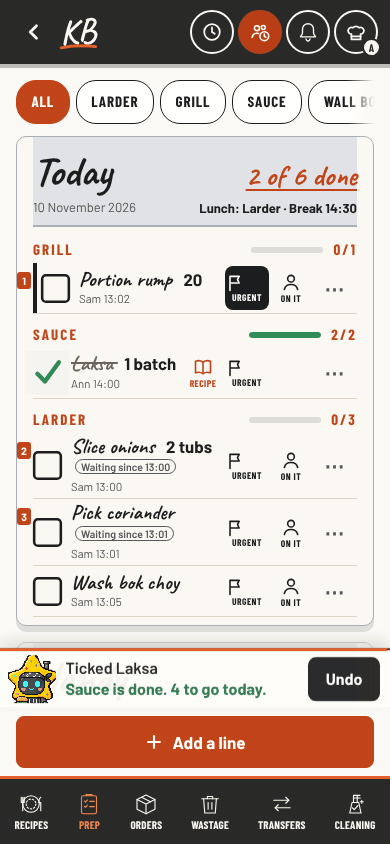
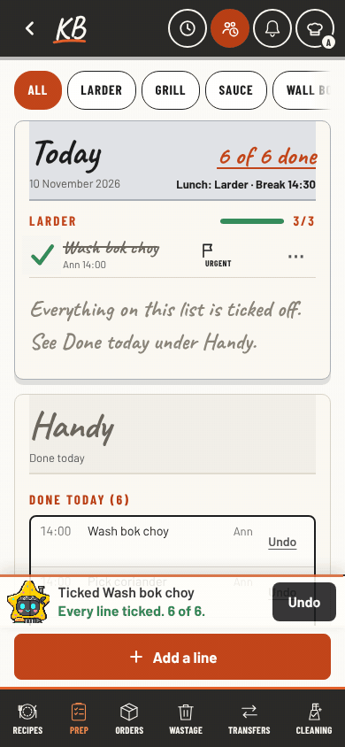
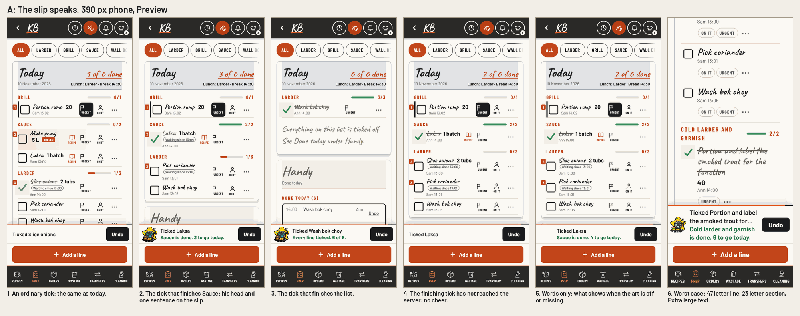
He waits at the edges
Never during the work. He stands where no lines are left: under a finished list, on an empty list, and in Home's prep card.
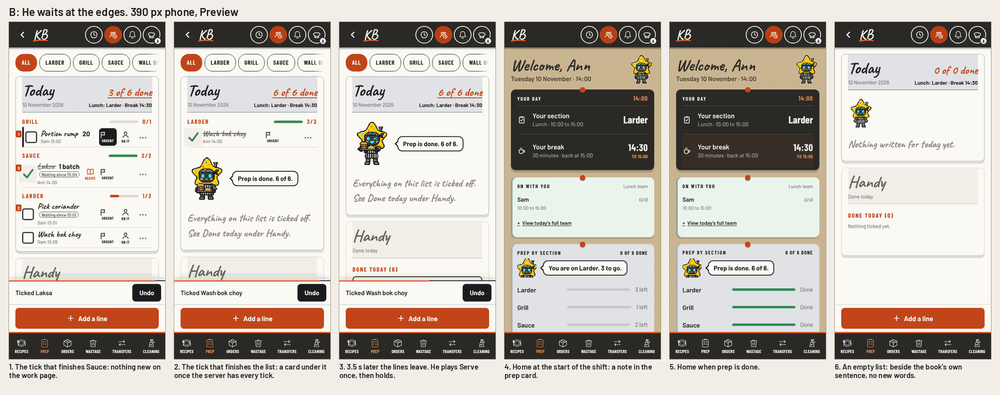
The star on the bar
He is the progress. His head rides each section's bar and winks with a small flag when the bar is full.
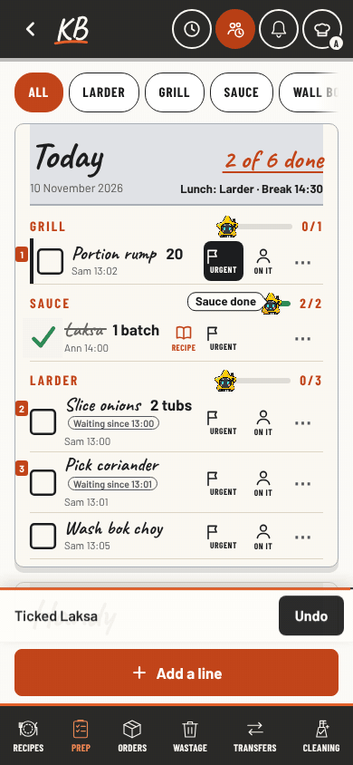
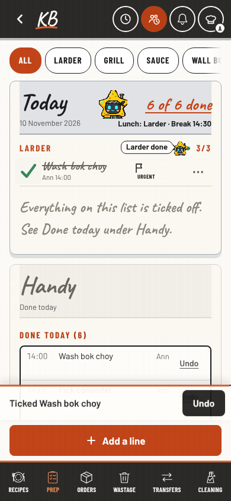
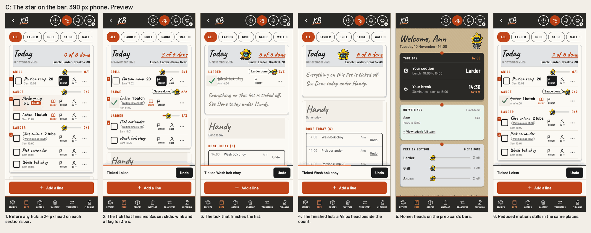
Words on the slip, the mascot at the edges
Drawn after round 1 so a blend could be judged on one screen. Round 2 asked for less: a smaller card, no shift-start note on Home, no host on an empty list.
A finished section adds one sentence to the slip the book already shows, with no art: Sauce is done. 3 to go today. A finished list gets a card under the list: Prep is done. 6 of 6. Home's prep card gets a note: You are on Larder. 3 to go. An empty list gets him beside the book's own sentence.
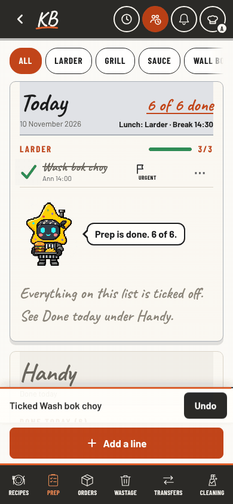
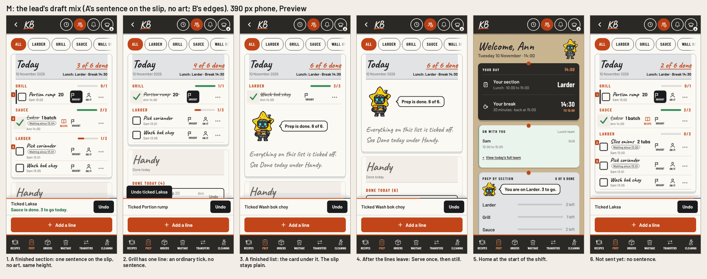
Tablet and laptop screens, the edge cases (a tick not yet sent, Undo, reduced motion, missing art, long names) and every measurement are in the evidence folder and verification.json.